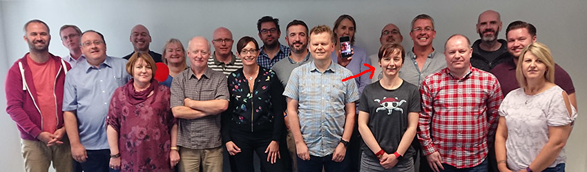

Automating Metadata Creation
Closer than we think
Jo Cook, Astun Technology
https://paleofuture.com/blog/2015/2/4/42-visions-for-tomorrow-from-the-golden-age-of-futurism
Hello! I'm Jo *waves*. I'm the Technical Evangelist for Data Discovery at Astun Technology.
Astun provide web-based mapping (and related) tools and training in the UK, based on the open source geospatial stack.
My passion is enabling others to do their job as easily as possible, preferrably with open source tools.
Pexel CC0Metadata is hard
- It's complex and time-consuming
- It's hard to know where to start
- There's a steep learning curve
wikimedia.org CC-BY-3.0
Manual metadata entry doesn't scale
Solutions that work for tens of datasets don't work so well for thousands
Flickr: US Census Bureau CC BY-ND 2.0
Automation is not a new idea!
Some metadata elements can be derived from the dataset
Flickr: The Henry Ford CC BY-NC-SA 2.0
Using FOSS is not even very original!
There are many open source geospatial libraries that can be used to derive some elements
Most approaches cover the elements that are easy to programatically derive, such as extents, titles, creation or update dates, language
But there are other elements that need a human touch, such as human-readable alternative titles, abstracts and keywords that can't be derived in the same way
We're developing a solution that links together a number of open source technologies to overcome the "manual challenge"
https://twitter.com/chloesmithmakes/status/1372999543550324736
Our solution comprises a number of open source tools and libraries linked together
Sam Storino
Part One: Metadata Crawler
Crawler is a script for discovering spatial data (vector or raster) in file systems and databases. For each data source it finds, it derives as much of the metadata as it can, or inserts place-holder elements for others.
wikimedia.org CC-BY-3.0
Crawler creates an ISO19139 metadata record for each data source it discovers, and an ISO19110 Feature Catalog record for vector data sources.
It can create static XML, or insert records directly into any Metadata Catalog with a CSW-T (Transactional CSW) endpoint.
At this stage in proceedings, we have a record for each data source, with some programmatic elements...
...some placeholder elements, and a linked feature catalog record describing the attributes.
Human hands have yet to touch the metadata!
Part Two: Ye Olde Approache
medievalfragments.wordpress.com
We do a second run through the data to create a spreadsheet with a row per record for data owners to complete the manual fields, then use the GeoNetwork API wrapped in a python script to match spreadsheet rows to metadata records in the catalog.
Step Two: The Cool New Experimental Approach
Flickr: Bernard Duport CC-BY-SA-2.0
With some python machine-learning and natural language processing libraries we can try and extract some useful information from the data
http://www.popgun80sband.co.uk/blog/top-ten-robots-of-the-80s/
We have a large corpus of metadata, and some best practice guidelines for data sharing to help train our model and define some rules.
Once we have these additional elements we can again use the GeoNetwork API in a python wrapper to update the metadata records
It's modular and schema-agnostic. You can use any approach to get the derived metadata to feed into the models, and output the results into any metadata schema.
Just don't mention Rube Goldberg!
Flickr: Natalie Downe CC BY-NC-SA 2.0
The end result will be valid metadata records that need minimal human intervention
The usual caveats apply!
Flickr: Kevan CC BY 2.0
Useful References
Crawler | SEO for publishers | Natural Language Toolkit | KeyBert | Mordecai | GeopandasThank You!
Jo Cook, Astun Technology

Automating Metadata Creation: Closer than we think